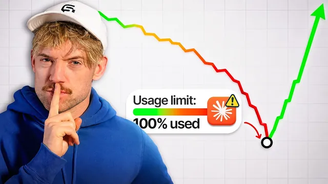

이것만 클로드에 붙여넣으면 토큰 한도가 안 터진다

원본 영상 보기 →
- 토큰 낭비의 대부분은 "구조"가 아니라 "방치"에서 나와요
- 매 턴마다 전체 대화를 다시 처리한다는 사실이 모든 규칙의 뿌리예요
- 모델은 하나를 고집할 자원이 아니라 역할로 배분하는 자원이에요
Paste This Into Claude, Never Hit a Token Limit Again
- 채널: Jack Roberts
- 게시일: 2026-08-29
- 원본: https://www.youtube.com/watch?v=xXS83RALMtc
한 줄 요약
요금제를 그대로 두고도 클로드(Claude / Claude Code)에서 쓸 수 있는 사용량을 3배 이상 늘리는 방법을 다룬 영상이에요. 서로 쌓이는 5단계로 정리했는데요. 세션 낭비 진단 → 사용 습관 → 소통 스타일 → 모델 라우팅 → 디자인 순서입니다.
전체 내용 정리
요금제를 안 바꾸고도 클로드 사용 가능량을 3배로 늘렸다고 합니다
발표자 Jack은 자신의 클로드 사용량을 3배 이상 늘렸다고 말해요. 그 양이 "반지의 제왕 전체를 클로드에게 8,400번 읽어줄 수 있는" 정도라고 하네요.
방법은 아주 단순한 다섯 개의 레벨로 이뤄져 있고, 각 레벨은 앞 레벨 위에 쌓입니다. 영상 설명란 두 번째 링크에 전체 시스템(프롬프트·스킬)이 들어 있다고 안내해요.
링크된 마스터 프롬프트 하나로 세션 낭비부터 진단합니다 (레벨 1)
Jack은 설명란 링크로 들어가면 나오는 페이지에서 프롬프트 하나를 복사해 클로드에 붙여넣으라고 해요. 이 프롬프트는 세 단계로 동작합니다.
첫째는 audit(감사)예요. 새 세션이 시작될 때 자동으로 미리 로드되는 것들을 전부 나열합니다. system tools, MCP 서버와 각 서버가 노출하는 tool 개수, CLAUDE.md, 세션 로그를 읽고요. 스코프 안의 모든 CLAUDE.md(현재 프로젝트·상위 폴더)의 용량을 측정해 5K를 넘는 파일이나 합계 10K 초과를 표시하며, skills 목록도 뽑아줘요.
둘째는 fix and apply(수정·적용)입니다. 지울 수 있는 것을 찾아 실제 사용량을 줄여줘요.
셋째는 key habits(핵심 습관)예요. 사용량을 낮게 유지하는 습관을 알려줍니다.
Jack의 경우가 인상적인데요. audit 결과 95.4%가 낭비였고, 전체 토큰의 97.8%가 "열어둔 채로 놔둔 세션 3개"에서 나왔다고 해요. 프롬프트는 세션 하나당 약 9,000토큰을 되돌려준다고 설명합니다. 대화에서 한 글자 입력하기 전 기준으로 "반지의 제왕 17페이지" 분량이죠.
같은 내용을 스킬 형태로도 제공하며, 클라이언트에게 보너스 "클로드 audit"으로 줄 수 있다고 하네요.
추가로 하나 더 있어요. 왼쪽 아래 플러스 → plugins → connectors로 들어가 안 쓰는 커넥터(예: Canva)를 disconnect로 잘라내라고 합니다. 커넥터는 빨리 추가하고 느리게 지우는 경향이 있으니까요.
대화가 길어질수록 돈이 샙니다: 사용 습관 5가지 (레벨 2)
Jack은 대부분의 사람이 최소 하나는 저지르는 비싼 실수를 5가지 습관으로 바꾸라고 해요.
1. 작업과 작업 사이에 /compact가 아니라 /clear를 쓰세요. /compact는 전체 대화를 다시 읽습니다. 작업이 끝나면 새 탭을 열고 /clear로 전부 비운 뒤 이어서 원하는 대화를 계속하면 돼요. 대화가 길어질수록 컨텍스트 윈도가 50만~60만 단어까지 커지고, 그걸 계속 처리하는 비용을 사용자가 내게 되거든요. 그런데 그 앞부분 50만 단어는 지금 하는 일과 더는 관련이 없잖아요.
2. 한 세션에는 한 모델만 쓰세요. 세션 도중 모델을 바꾸면(예: Fable 5 → Opus) 전체 히스토리를 다시 처리합니다. effort(추론 강도)도 마찬가지예요. 모델 선택기와 effort 레벨을 대화 내내 그대로 두시는 게 좋아요.
3. 질문을 몰아서 하세요. 메시지를 하나씩 여러 번 보내지 말고, Glide 같은 받아쓰기 도구의 연속 모드로 하고 싶은 말을 한 번에 다 쏟아내면 됩니다. 질문할 때마다 AI가 전체 대화 기록을 다시 읽기 때문이에요.
4. 고쳐 쓰기보다 편집하세요. 잘못 보낸 메시지를 새 메시지로 정정하면 대화가 길어지고 틀린 답과 맞는 답이 둘 다 남아요. 대신 원래 메시지의 연필(편집) 아이콘을 눌러 내용을 고치고 저장하면, 컨텍스트를 오염시키지 않고 그 메시지부터 다시 재생됩니다. 채팅에서는 되지만 code release에서는 항상 보이지는 않는다고 하네요.
5. 가능하면 PDF·이미지 대신 텍스트를 쓰세요. 계속 참조할 자료라면 미리 평문 텍스트로 전처리해 두면 매번 다시 읽지 않아도 돼요.
클로드가 장황하게 답하는 문제는 커뮤니케이션 스타일로 잡습니다 (레벨 3)
클로드의 답을 읽어도 무슨 말인지 이해되지 않는 경우가 있잖아요. Jack은 이를 "verbosity(장황함) 문제"라 부르고, 표준 커뮤니케이션 스타일 "C100"과 전용 스킬로 고칠 수 있다고 해요.
이 스킬은 내용을 5살에게 설명하듯 쪼갭니다. "문제(5살한테 설명하듯)", "해결(한 문장)", "잠깐, 그게 뭔데?", "왜 중요한데?"의 골격이죠.
클로드가 명확할수록 되묻는 질문이 줄어 대화가 짧아지고, 사람이 쓰는 뇌 에너지(사람의 토큰 비용)도 줄어듭니다.
사용법은 간단해요. 해당 문서를 복사해 클로드에 붙여넣고 "이걸 스킬로 만들어줘"라고 한 뒤, 슬래시 명령으로 그 스킬을 부르면 사람처럼 말해줍니다. 비행기를 착륙시킬 때 필요한 것은 단순한 문장이지, 장황한 문학적 문체가 아니라는 비유를 들더라고요.
(유료 광고 구간) 스폰서 GenSpark — 여러 모델을 한 환경에서 쓰는 플랫폼
이 구간은 영상의 유료 광고예요. Jack은 "클로드는 훌륭하지만 도구 하나일 뿐"이라며 GenSpark 6.0을 소개합니다.
하나의 환경에서 여러 이미지·영상 생성 모델을 바꿔 쓰고, AI 이미지 챗·AI 시트·AI 슬라이드를 쓸 수 있다고 해요. 예로 회의록을 넣어 3~4페이지 피치 제안서를 만들고 creative / professional 모드로 뽑아 PowerPoint로 내보내는 것을 시연합니다. 가입 시 무료 크레딧이 주어진다고 하네요.
작업 성격에 따라 모델을 갈아 끼웁니다 (레벨 4)
한 종류의 모델만 쓰면 가치를 테이블에 남겨두는 것이라고 해요.
Jack의 배분은 이렇습니다. Haiku는 잡일꾼, Sonnet은 빌더·일반 질문, Opus는 메인 세션 운전자예요. Fable은 "예술가"로, 여전히 가장 유능한 모델이며 결정이 중요할 때 쓰고 창의적 프리미엄에서는 Opus보다 낫다고 합니다. $200 플랜이면 자유롭게, $20 플랜이면 아껴 쓰면 돼요.
ChatGPT $20 구독이 있으면 Codex를 검증용으로 붙이라고 하네요. "Codex CLI로 이 작업을 다시 검토해"라고 시키면 됩니다. 클로드는 "문제 없다"고 해놓고 실제로는 큰 버그가 있는 경우가 많아서요. 특히 잘못되면 전체를 다시 만들어야 하는 상황에서 Codex 재검증이 중요하다고 강조해요.
또 코드베이스·GitHub 레포는 토큰을 크게 태우는데요. GitHub 스타 10만 개 이상인 도구 "GraphiPy"(자막 발음 기준 표기)를 쓰면 코드 사이의 관계를 파악해 클로드에게 지도를 쥐여주는 효과가 납니다. 모든 줄을 훑지 않고도 질의 비용이 크게 줄어요. 새 코드베이스를 익히거나 질문할 때 특히 쓰라고 하네요.
클로드에서 디자인할 때 토큰을 아끼는 법 (레벨 5)
Jack은 클로드 안에서 디자인하는 걸 좋아하는데요. 마음에 드는 디자인 스타일이 나오면 스킬로 저장해 탐색에 돈을 다시 태우지 않게 한다고 해요.
여기서 중요한 숫자가 하나 나옵니다. 스크린샷은 한 장에 5,000토큰이에요. "이렇게 만들어줘" 하며 스크린샷을 계속 던지지 말고, 어떻게 생겼는지 말로 설명하려 애쓰라고 합니다. 20번, 100번 던지면 10만 토큰이 계속 타거든요.
성능이 시간이 갈수록 떨어지므로 첫 프롬프트에서 제대로 맞추려 하고요. 승자 스타일이 나오면 코드화(codify)합니다. 스펙이 2KB면 충분하고 토큰을 크게 아껴줘요.
그리고 "design loop" 스킬로 서브 에이전트 비평가들을 띄웁니다. 토큰은 약간 더 들지만 결과물이 훌륭하고, 한 번 나온 좋은 결과는 코드화해서 원하는 만큼 재사용하면 되니까요.
영상은 여기까지가 토큰 절약이라며, "절약만으로는 위대해질 수 없으니 이 기술로 실제 무엇을 할 수 있는지는 다음 영상에서 다룬다"며 끝납니다.
핵심 인사이트
- 토큰 낭비의 대부분은 "구조"가 아니라 "방치"에서 나와요: Jack의 실제 audit에서 전체 토큰의 97.8%가 열어둔 세션 3개에서 나왔습니다. 거창한 최적화보다 "끝난 세션 닫기 /
/clear"라는 습관 하나가 즉시 큰 효과를 내죠. - 매 턴마다 전체 대화를 다시 처리한다는 사실이 모든 규칙의 뿌리예요: 모델·effort 고정, 질문 몰아 보내기, 정정 대신 편집, PDF 대신 텍스트. 전부 "재처리량을 줄인다"는 한 원리의 파생입니다.
- 모델은 하나를 고집할 자원이 아니라 역할로 배분하는 자원이에요: 잡일은 저렴한 모델, 큰 결정은 고급 모델, 검증은 아예 다른 계열(Codex)로 교차 확인하고, 코드베이스 탐색은 맵/그래프 도구로 우회하면 됩니다.
오늘 당장 해볼 것
- 지금 열려 있는 클로드 / Claude Code 세션을 점검해 안 쓰는 세션을 모두 닫으세요. 그리고 작업이 끝날 때마다
/compact대신/clear를 습관화하시고, 이어지는 새 작업은 새 탭에서 시작하면 좋아요. - 한 대화에서는 모델과 effort(추론 강도)를 처음 고른 상태로 고정하세요. 바꾸고 싶으면 새 세션을 여시고요. 질문은 하나씩 보내지 말고 한 번에 몰아서 정리해 보내는 게 좋습니다.
- 자동화나 개발을 업체에 맡기는 경우, 업체에 "새 세션에 자동으로 로드되는 컨텍스트(CLAUDE.md, MCP 툴 수, 스킬)를 감사해서 5K 넘는 파일과 안 쓰는 커넥터를 정리해 달라"고 요청해보세요. 반복 참조 자료는 PDF가 아니라 평문 텍스트로 전달하시면 더 좋아요.